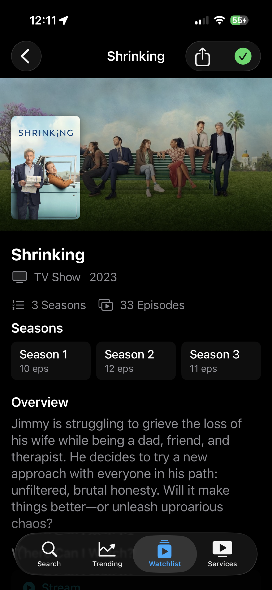
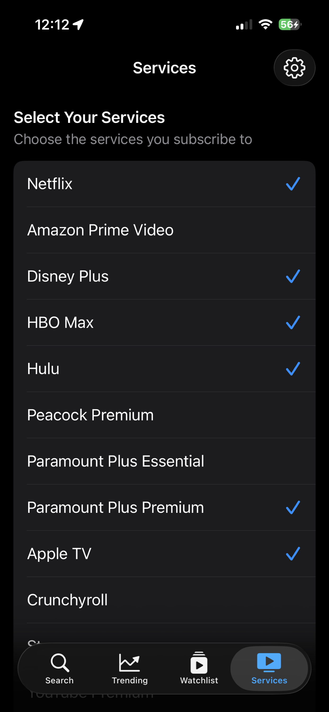
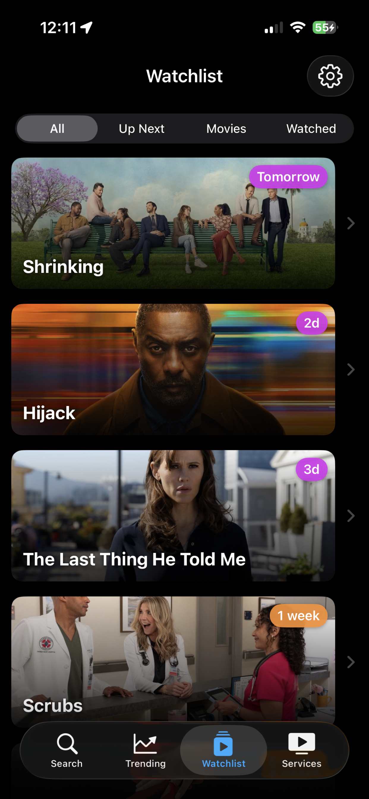
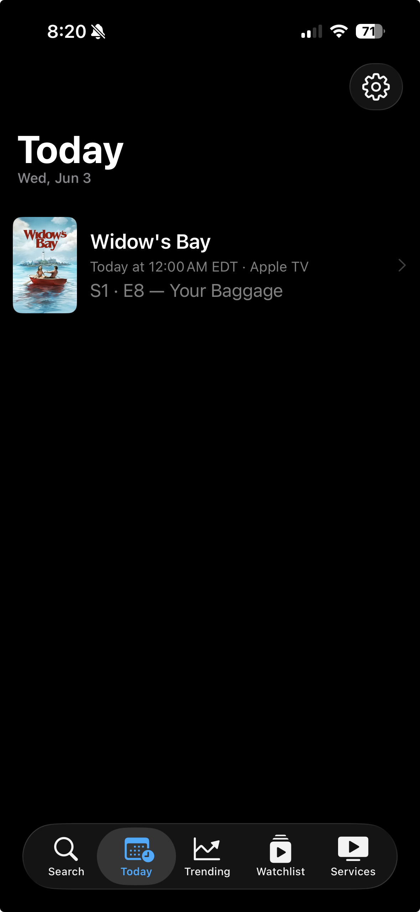
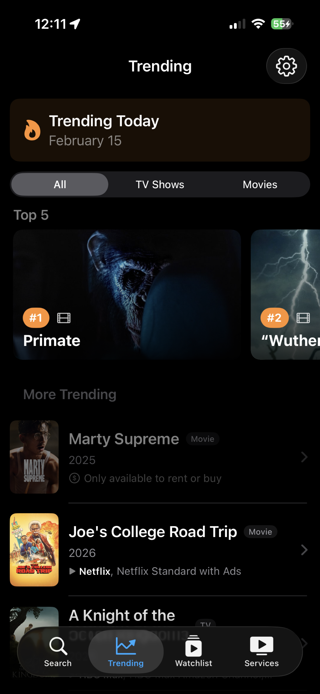

Search any title. Get answers instantly.
Type in any movie or TV show and see exactly where it's available. Streaming, renting, buying — every option, from every service, in one place.
- See season and episode counts for TV shows
- Stream, rent, or buy — know every option
- Save anything to your watchlist in one tap

Personalized to the services you actually pay for.
Select which streaming services you subscribe to. Results are tailored to show what's available on your services first, so you stop paying to rent something you already have access to.

Never lose track of what to watch next.
Save movies and TV shows to your watchlist. Shows display countdown badges so you always know when the next episode drops, and shows you've finished come back automatically when a new season is announced.
- Countdown badges: Tomorrow, 2d, 1 week
- Mark individual episodes watched as you go
- Get notified when new episodes air
- Filter by Shows, Movies, or Watched

Know what's on tonight — and where to watch it.
The Today tab surfaces every episode from your watchlist airing today, with the local air time and streaming service on every row. The "where can I watch?" question finally answered the moment you open the app.
- Per-episode rows for double drops (Apple TV+, HBO)
- Full-season Netflix drops collapse into a "Season available" row
- Tap any row for synopsis, still image, and one-tap watched
- Long-press the app icon for Quick Actions: Search, Today, Watchlist, Trending



Discover what everyone's watching.
Browse daily trending movies and TV shows. See the top 5, check where they're streaming, and add anything that catches your eye to your watchlist.
